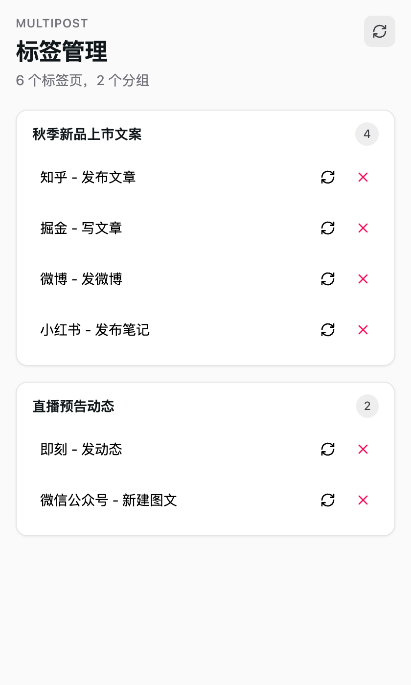

多平台发布插件
写一次内容，浏览器里一键同步发到多个平台。界面跟随浏览器语言，Chrome 设为中文即是中文。
浏览器插件 · 免费 · 无需注册
31
动态平台
41
文章平台
30
视频平台
7
播客平台
1
解压 zip，Chrome 打开 chrome://extensions，开启「开发者模式」
2
点「加载已解压的扩展程序」，选择解压后的文件夹
3
先在同一浏览器登录目标平台，再点插件图标开始发布
右侧是插件侧边栏的真实界面：同步任务打开的标签页按分组列出，可重新加载或关闭。会批量发布内容，请遵守各平台规则。
侧边栏 · 标签管理
